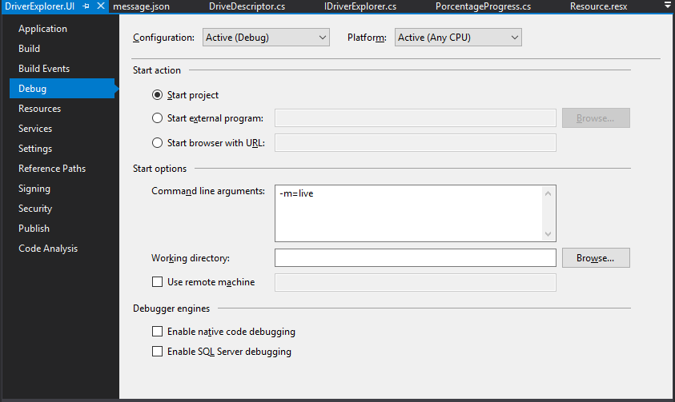
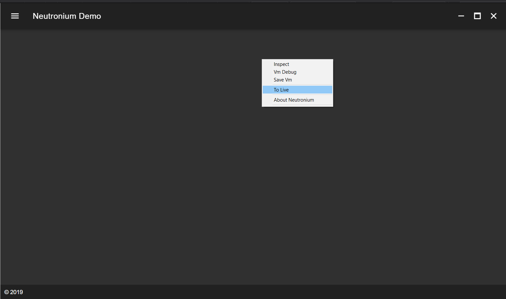

Developing
Neutronium.SPA.Demo is based on neutronium vue plugin.
So you need to run npm install first time.
# install dependencies
npm install
Installed npm script
Neutronium vue plugin installs 3 scripts by default:
npm run serveServe files for Neutronium for debug in local browser using
.cjsonfiles as viewModel.npm run liveServe files for Neutronium hot-reload.
npm run buildBuild files to be used in Neutronium application.
Develop in the browser
To open the view in the browser:
# serve with hot reload at localhost:9000
npm run serve
To open the page at a specific route, use the -- --open-page=#\my-page option:
# serve with hot reload at localhost:9000 starting with page about
npm run serve -- --open-page=#/about
ViewModels:
During development vm.cjson files are loaded as substitute viewModels.
By convention the viewModel corresponding to a page will be loaded from a folder with the same route name under the data folder.
As such the folder structure is the following:
├── data
│ ├── about
│ │ └── vm.cjson
│ └── main
│ └── vm.cjson
Regular JSON files are compatible with .cjson format, but the best way to generate .cjson files is to can use the save Vm button of Neutronium debug toolbar to save copy of "real" ViewModel.
Develop with hot-reload
This allow to edit HTML, CSS and javascript while working in a running Neutronium application and see changes live.
Starting
Alternatively:
- Run application in
live mode

- Switch to
live modeby runningnpm run liveand reloading the page using the served files.

Reload
Sometimes it is necessary to force browser reload while using hot-reload. This possible using reload command.
- Reload the page. Maybe useful on some scenario when page does not automatically reload.

Build
To build the files for usage in Neutronium application, just run:
# build files for usage in the C# application
npm run build